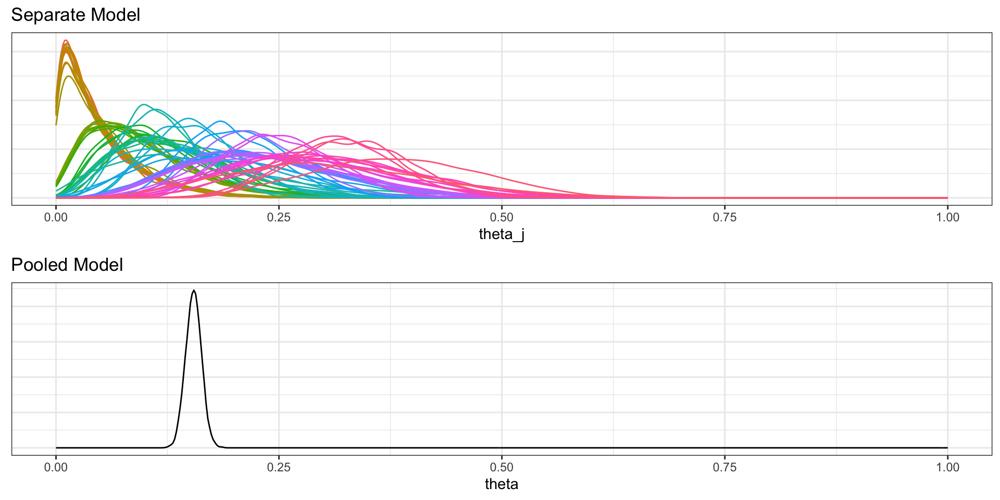
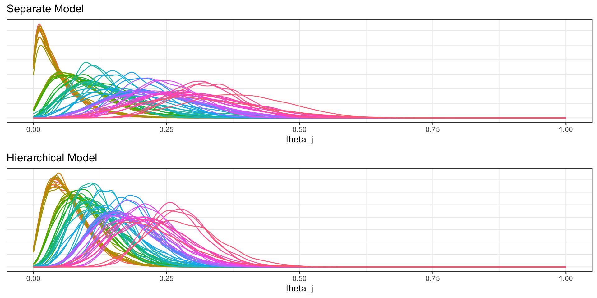
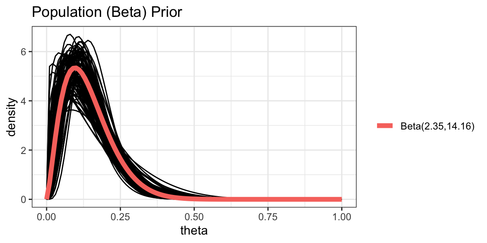
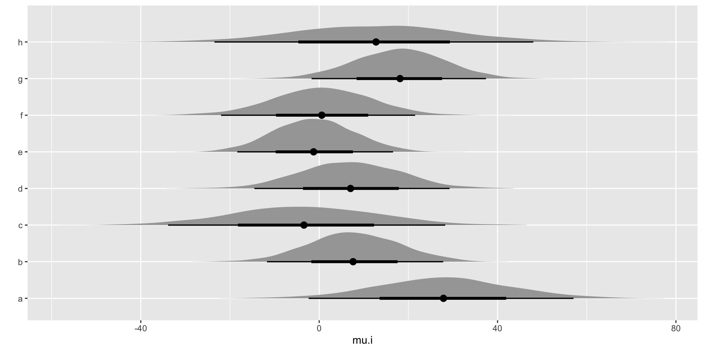
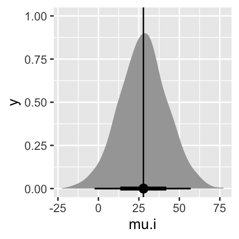
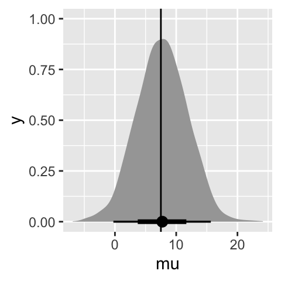
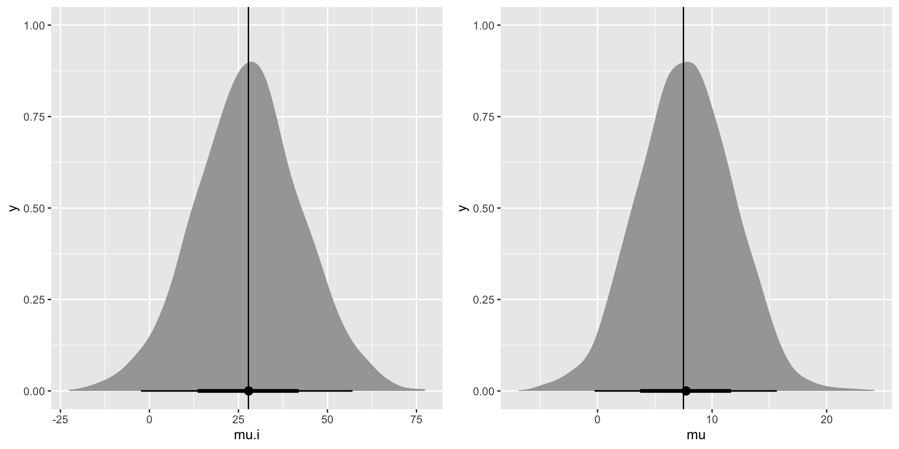
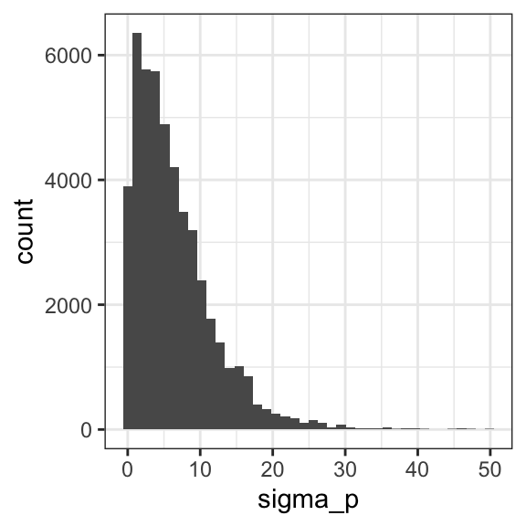

[1] "0/20" "0/20" "0/20" "0/20" "0/20" "0/20" "0/20" "0/19" "0/19"
[10] "0/19" "0/19" "0/18" "0/18" "0/17" "1/20" "1/20" "1/20" "1/20"
[19] "1/19" "1/19" "1/18" "1/18" "2/25" "2/24" "2/23" "2/20" "2/20"
[28] "2/20" "2/20" "2/20" "2/20" "1/10" "5/49" "2/19" "5/46" "3/27"
[37] "2/17" "7/49" "7/47" "3/20" "3/20" "2/13" "9/48" "10/50" "4/20"
[46] "4/20" "4/20" "4/20" "4/20" "4/20" "4/20" "10/48" "4/19" "4/19"
[55] "4/19" "5/22" "11/46" "12/49" "5/20" "5/20" "6/23" "5/19" "6/22"
[64] "6/20" "6/20" "6/20" "16/52" "15/46" "15/47" "9/24" "4/14" Bayesian Data Analysis
Introducing Bayesian Hierarchical Modelling
Hierarchical Binomial Model
Suppose we are considering the success of a treatment for cardio vascular disease (CVD) in a number of different hospitals. We are interested in \(\theta_j\) the survival probability associated with hospital \(j\).
We have observations \(y_{ij}\) which tells us the status of patient \(i\) in hospital \(j\) such that \(y_{ij} = 1\) if the patient survived and \(y_{ij} = 0\) otherwise.
We could assume that \(\theta_j\) are independent.

Hierarchical Binomial Model
We could assume that there’s a joint effect i.e., a common \(\theta\)

Hierarchical Binomial Model
But maybe it’s more sensible to assume that we have different \(\theta_j\) but that they have something in common.
- A natural assumption to make is that \(\theta_j\) have a common population distribution

Now we are building up levels.
- We have a data level, a parameter level and a hyperparameter level
Hierarchical Models - Terms
The data level: observations given parameters \(p(y_{ij}|\theta_j)\)
The parameter level: parameters given hyperparameters \(p(\theta_j|\tau)\)
The hyperparameter level: \(p(\tau)\)
Putting all of this together in Bayes’ theorem we get:
\(p(\theta, \tau|y) \propto p(y|\theta)p(\theta|\tau)p(\tau)\)
Hierarchical Models - Rats example
In the evaluation of drugs for possible clinical application, studies are routinely performed on rodents.
Suppose we have studies to estimate \(\theta\), the probability of a tumor in a population of female laboratory rats of type ‘F344’ that receive a zero dose of the drug (a control group).
The data are whether the rat developed endometrial stromal polyps (a kind of tumor)
The experiment has been repeated 71 times and the data are shown below:
- You will find Rcode on the Rstudio server that will work through the modelling options for these data. The file is called
Week8_BinomialBHM.
Hierarchical Models - Rats example
Let’s specify a Bayesian Hierarchical model for the rats example.
Let \(y_j\) be the number of rats that had tumors in study \(j\) and let \(n_j\) be the total number of rats in study \(j\).
It is natural to assume a binomial model for the number of tumors, given \(\theta_j\).
We can select a prior distribution for \(\theta_j\) from the conjugate family and vague priors for the hyperparameters.
\(\text{}\)
\(\text{}\)
\(y_j|\theta_j \sim Binomial(\theta_j,n_j)\)
\(\theta_j|\alpha,\beta \sim Be(\alpha, \beta)\)
\(\text{}\)
\(\alpha \sim ht(1,10^2,1)\)
\(\beta \sim ht(1,10^2,1)\)

Hierarchical Models - Rats example

Hierarchical Models - Rats example

Hierarchical Models - Rats example
- Summary of hyperparameters \(\alpha\) and \(\beta\) from the population Beta prior distribution
| .variable | .value | .lower | .upper | .width | .point | .interval |
|---|---|---|---|---|---|---|
| alpha | 2.498288 | 1.384457 | 4.26791 | 0.95 | median | qi |
| beta | 14.927844 | 8.381019 | 25.27205 | 0.95 | median | qi |
- \(Beta(\alpha, \beta)\) given posterior draws of \(\alpha\) and \(\beta\)

Hierarchical Normal Model
Assume a factory has 6 machines and a quality measure that is taken on a regular basis.
- How might we structure a hierarchical model such that we get an overall estimate of quality across all machines as well as a quality estimate per machine?
\(\text{}\)
\(y_{ij} \sim N(\mu_j,\sigma^2)\)
\(\mu_j \sim N(\mu_F, \sigma_F^2)\)
\(\text{}\)
\(\mu_F \sim N(...)\)
\(\sigma_F \sim ht(...)\)
\(\sigma \sim ht(...)\)

Hierarchical Normal Model
You might also consider that the variation in quality measures is not constant across all machines.
\(\text{}\)
\(\text{}\)
\(y_{ij} \sim N(\mu_j,\sigma_j^2)\)
\(\mu_j \sim N(\mu_F, \sigma_F^2)\)
\(\sigma_j \sim ht(...)\)
\(\text{}\)
\(\mu_F \sim N(...)\)
\(\sigma_F \sim ht(...)\)

Example: 8 schools
A study was performed for the Educational Testing Service to analyze the effects of special coaching programs on test scores
Separate randomized experiments were performed to estimate the effects of coaching programs for the SAT (Scholastic Aptitude Test) in each of eight high schools.
The outcome variable in each study was the score on the SAT
Typically the scores can vary between 200 and 800, with a mean = 500 and standard deviation = 100.
The SAT examinations are designed to be resistant to short-term efforts directed specifically toward improving performance on the test; instead they are designed to reflect knowledge acquired and abilities developed over many years of education.
Nevertheless, each of the eight schools in this study considered its short-term coaching program to be successful at increasing SAT scores.
Example: 8 schools
The performance gains of coached students were compared to non-coached students. Separate estimates were obtained for each school, but because the size of the schools differed, the standard errors differed as well.
In each school the estimated coaching effect and its standard error were obtained.
| y | se |
|---|---|
| 28 | 15 |
| 8 | 10 |
| -3 | 16 |
| 7 | 11 |
| -1 | 9 |
| 1 | 11 |
| 18 | 10 |
| 12 | 18 |
Example: 8 schools
Upon initial examination of the data it may seem that some coaching programs have moderate effects (in the range 18–28 points), most have small effects (0–12 points), and two have small negative effects.
However, when we take note of the standard errors of these estimated effects, we see that it is difficult statistically to distinguish between any of the experiments:

Hierarchical normal model: 8 schools
The general overlap in the posterior intervals based on independent analyses suggests that all experiments might be estimating the same quantity.
Is the effect actually the same everywhere i.e., is there one common coaching effect?
Under the hypothesis that all experiments have the same effect and produce independent estimates of this common effect, we could treat the data as eight normally distributed observation with an overall mean and known variances.
But, would it be possible to have an effect of 28 in one school just by chance if the coaching effect across all schools is the same?
Issues with spearate and pooled effects
Let’s consider school A. With the separate effects model we infer that for school A there is a 50% chance that the true effect is greater than ~28.

Issues with spearate and pooled effects
With the pooled effects model, we infer that there is a 50% chance that the true effect is greater than 7.5. A value greater than 28 is highly improbable.

Issues with spearate and pooled effects
The separate effects model treats School A completely in isolation, ignoring the fact that we have considerable evidence that courses similar to the one taught in School A evidently have typical effect size less than 20 points.
The pooled effects model would assume that the true effect in all schools is exactly equal, in spite of the courses being taught by different teachers to different students.

- What about a middle path?
Hierarchical Normal Model - 8 Schools
Assume that each school’s “true effect” is drawn from a normal distribution with unknown mean and standard deviation
Assume the observed effect in each school is sampled from a normal distribution with a mean equal to the true effect, and standard deviation given in the dataset.
\(\text{}\)
\(\text{}\)
\(y_{i} \sim N(\mu_i,\sigma_i^2)\)
\(\mu_i \sim N(\mu_P, \sigma_P^2)\)
\(\text{}\)
\(\mu_P \sim N(0,200^2)\)
\(\sigma_P \sim Uniform(0,200)\)

Hierarchical Normal Model - 8 Schools
\(y_{i} \sim N(\mu_i,\sigma_i^2)\)
\(\mu_i \sim N(\mu_P, \sigma_P^2)\)
\(\mu_P \sim N(0,200^2)\)
\(\sigma_P \sim Uniform(0,200)\)
normalmodel = "
model{
for(i in 1:N)
{
y.i[i] ~ dnorm(mu.i[i],sigma.i[i]^-2) # data model
mu.i[i] ~ dnorm(mu_p,sigma_p^-2) # prior for effect
} # end i loop
mu_p ~ dnorm(0,200^-2)
sigma_p ~ dunif(0,200)
}
"Posterior distribution for the effects

Effect summaries
# A tibble: 8 × 8
school .variable .value .lower .upper .width .point .interval
<int> <chr> <dbl> <dbl> <dbl> <dbl> <chr> <chr>
1 1 mu.i 9.87 -2.61 30.8 0.95 median qi
2 2 mu.i 7.64 -4.88 20.4 0.95 median qi
3 3 mu.i 6.42 -11.1 20.4 0.95 median qi
4 4 mu.i 7.69 -5.00 21.0 0.95 median qi
5 5 mu.i 5.73 -8.76 16.4 0.95 median qi
6 6 mu.i 6.39 -7.71 18.5 0.95 median qi
7 7 mu.i 9.80 -1.20 25.3 0.95 median qi
8 8 mu.i 8.01 -6.98 24.9 0.95 median qi What about \(\sigma_p\)?
\(\sigma_p\) is the shrinkage parameter, in this model it controls how much \(\mu_i\) can vary away from \(\mu_p\)
If \(\sigma_p\) is close to zero we tend towards to pooled model.
As \(\sigma_p\) increases we move back towards the independent model.
Posterior distribution of \(\sigma_p\)

What happens to \(\mu_i\) as \(\sigma_p\) changes?